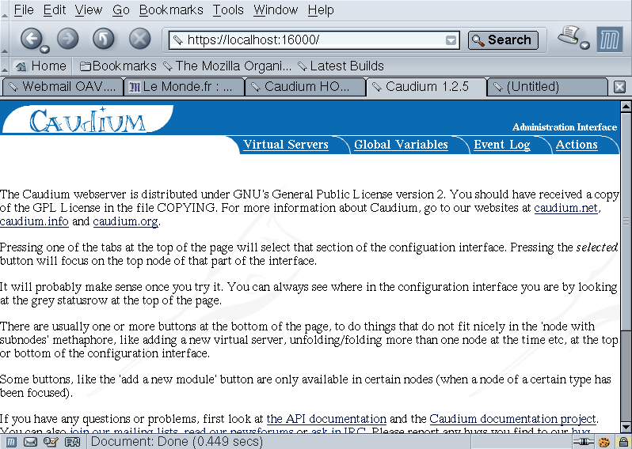

4.6. Configuration InterFace (CIF.)
The CIF. is where the administrator manages the server. When you first login it looks like this.

The first page you will see when you login on the CIF.
In the CIF, you'll find four tabs:

The server(s) you have created in this Caudium installation. This is where you will tune each server configuration.
The configuration variables that affect Caudium as a whole, including all virtual servers.

The log file output as a nice looking log. Note however, that neither errors nor startup events are displayed in the event log. This means developers should always look in the plain log file.
Some actions you may take on you servers such as shutting down Caudium or generating an SSL certificate. This allows you to avoid some of the command line stuff.
As the CIF. is quite easy to cope with, I will try to describe some of the hidden things you may need to know about. One of them is the button. This button is very useful. Furthermore, some Basic options will not be available unless you turn it on. With this option, you will have more control over Global Variables and some modules in Virtual Servers.
One of these controls is the
 button that you will have when you
are in a module. This button will allow developers to check the new code of
their modules without restarting Caudium. You should also know that very
few options in some modules will not be activated unless you reload the
module. So always reload a module when you think an option has not been
read by Caudium.
button that you will have when you
are in a module. This button will allow developers to check the new code of
their modules without restarting Caudium. You should also know that very
few options in some modules will not be activated unless you reload the
module. So always reload a module when you think an option has not been
read by Caudium.